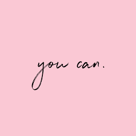
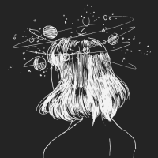

Rabuscos
"Vai dar certo!"
"Vai dar certo!"
"Vai dar certo!"
Ela é incrível

Eu tinha medo das fotos, do que elas poderiam capturar externamente que refletisse algo do meu mundo interno. Mas isso foi antes. Antes de perceber que fazer com que a vida seja um “livro aberto” tem lá suas vantagens. Porque, quando seus sentimentos e personalidade estão expostos, não há a necessidade de gritar ao mundo as suas necessidades.
Eu sou essa bagunça mesmo, essa confusão, essa tempestade. Meu rosto é cheio de perebinhas que só estão melhorando agora, meu cabelo não coopera todos os dias, nem sempre eu amo a imagem que reflete quando olho pro espelho. Mas eu adoro o som da minha risada quando sorrio por besteira; amo esse meu jeito de não se importar por não saber dançar, apenas dançar; acho lindo quando, sem querer, eu faço o dia de alguém melhor.
Sim, eu tenho milhares de defeitos, mas eu sou incrível, e não preciso que ninguém me diga isso. A quantidade de curtidas em uma foto não quantifica o meu valor, porque o meu valor não pode ser quantificado.
Sobre um amor que não era recíproco

Me apaixonei. Não foi como um conto de fadas da Disney. Nada era perfeito, nada era sólido e, o pior: Não era recíproco.
Eu o senti de outras vidas, tive sonhos em outros tempos enquanto cochilava em seu ombro e, a realidade é que já não sei o que faço, porque esperei demais ele me corresponder que agora estou com medo de não conseguir mais dormir sem chorar.
A pior parte é que eu o deixei partir e o desgraçado de olhos castanhos nem mesmo se importou de me pedir para ficar e... Sabe? Fui tolo. Aliás, meu coração é tolo. Não sei porque ainda insisto em acreditar que em algum lugar existe a "pessoa certa" esperando por mim.
Eu nunca fiquei tão mal por alguém. Todo amor deveria ser recíproco por natureza, mas... Né!?
Você não queria liberdade? Desapego? Toma aí, faz bom proveito!

E aí, como estão as coisas aí desse lado? Conseguiu se resolver com a família? Decidiu em que vai investir aquela grana que tu juntou? Vai mesmo fazer o mestrado? É, branquinho, já faz um tempo que a gente não se fala, né? E, pelo que eu venho te falar hoje, acredito que não vai dar tempo de você me responder todas essas perguntas.
Relutei muito em te escrever tudo isso, esperei muito, pra ver se as coisas se ajeitavam. Você sabe, eu ia receber uma mensagem tua dizendo que queria me ver, a gente ia se ver e você me abasteceria de ilusões pra não ter que aparecer aqui pelos próximos 21 dias, que seria mais ou menos quando tu iria sentir falta e mandaria outra mensagem.
Na primeira semana eu não me importaria de tu não ter aparecido porque, você não está aqui, mas me disse coisas lindas no outro dia e isso significa que você gosta de mim, certo? Na segunda semana tu também não apareceu, mas “tudo bem, amiga. É porque ele trabalha demais, eu entendo”. Na terceira eu já começaria a acreditar que, na verdade, você só me quer pra curar carência. E era aí que tu aparecia, e o ciclo se repetindo.
Enfim, fui deixando levar. Fui deixando levar até um dia desses, até eu finalmente ter cansado de ter alguém que só ocupa espaço, que só aparece pra dizer “presente” e depois some. Eu precisei de você no dia em que vi uma menina ser assediada no ônibus, precisei que você me fizesse acreditar que ainda valia a pena acreditar nas pessoas. E você? Nem sinal de vida.
Só nesses dias em que tu sumiu, machuquei meu calcanhar e ele sarou duas vezes. Duas. Então, me diz: De que me adianta essas tuas palavras lindas se, quando eu to prestes a pular do penhasco, tu não tá lá pra me segurar? Eu não quero mais esse teu gostar meia boca. Levanta dessa cadeira e vai embora, porque o que não tá faltando é gente querendo sentar nela.
Te dei prioridade durante meses, você fez pouco caso. Você não queria liberdade? Desapego? Toma aí, faz bom proveito!
Nossos corações se encontraram na vida certa, mas com o sentimento errado.
Desculpa, nego, não dá mais pra continuar aqui. Ainda lembro dos teus traços, dos teus recados, dos teu abraços. Tudo vai ficar guardado pra sempre em mim.
Desculpa, nego, não sou o pássaro que fará o teu céu sorrir. Eu bem-te-vi, bem-te-quis, bem-parti. Arranquei o sorriso de ti.
Desculpa, mas a vida nem sempre é sobre ficar, mas também é sobre deixar de ocupar um espaço no peito que não é merecido, reconhecer que é indigno e saber quando voar.
Desculpa. Prometo que vai ficar marcado cada abraço, cada beijo, cada laço, cada desejo, cada memória tua, feito tatuagem na alma. A vida pra você é bela e tu sempre quis calma. O mínimo que posso te oferecer é mar agitado.
Nossos corações se encontraram na vida certa, mas com o sentimento errado.